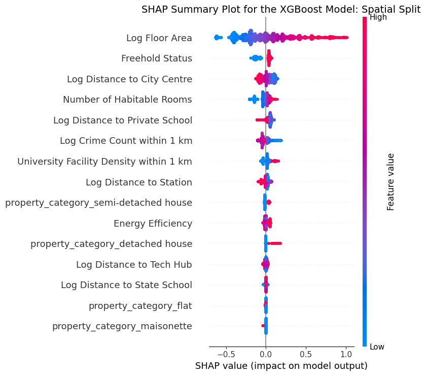
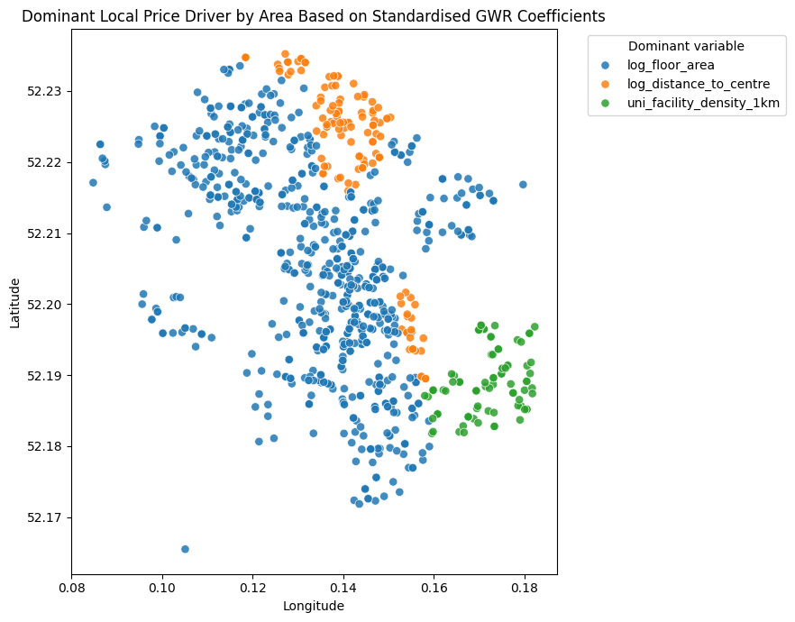

Why I chose this project
I chose this project because of my interest in property and the factors that drive house prices. I wanted to explore how property features and location influence value, and compare machine learning models to see which could predict house prices in Cambridge most accurately.
The question
How can property features and location help explain residential prices in Cambridge?
My approach
I prepared property and location features, including floor area and distances to the city centre, stations, schools and technology hubs. I compared Ordinary Least Squares, Random Forest and XGBoost using both random and spatial train-test splits. SHAP helped explain predictions, while Geographically Weighted Regression explored local variation.
Findings & interpretation
Test how geography affects evaluation
The notebook compares random and spatial splits. XGBoost achieved a log-price R² of 0.908 under the random split and 0.833 under the spatial split, showing why the validation design matters.
Make predictions interpretable
SHAP visualisations show how property and location features contribute to XGBoost predictions, both across the test sample and for individual properties.
Explore local relationships
Geographically Weighted Regression maps how the relationship between property features and prices varies across Cambridge. This exploratory analysis complements the predictive models.
Project visualisations





Scope & limitations
The quoted R² values refer to log-price predictions in the saved notebook outputs, not currency-scale accuracy. Random and spatial splits test different generalisation settings. GWR is presented as exploratory analysis. Findings depend on the dataset, feature coverage and evaluation design.